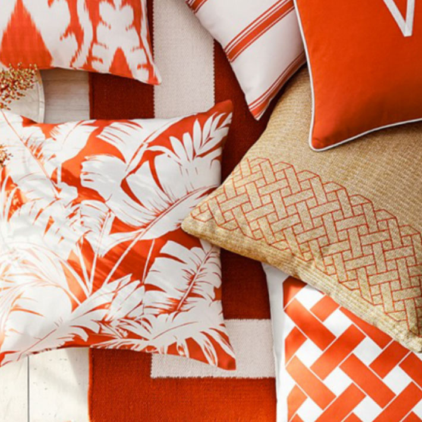
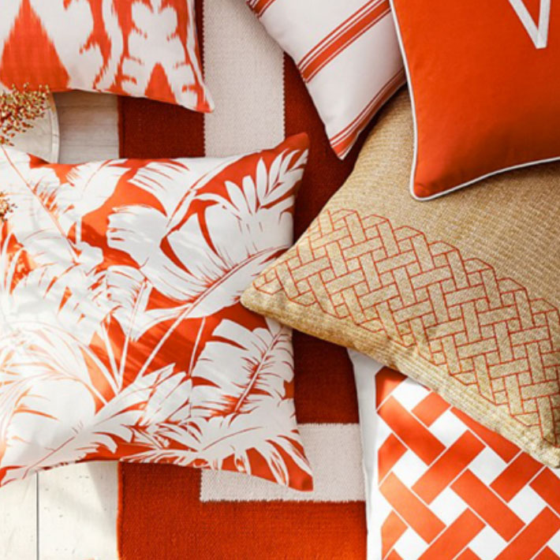

01.
Paul Gallo's Running Ginger illustration turns into dancing snowflakes- in an allover fabric design.
02.
This lively illustration of the man in the white suit turns into a rich fabric design- an extravagant kaleidoscope of patterns and colors.
03.
This delicate and refined pen illustration repeats to become a modern lace-like damask pattern.
 
